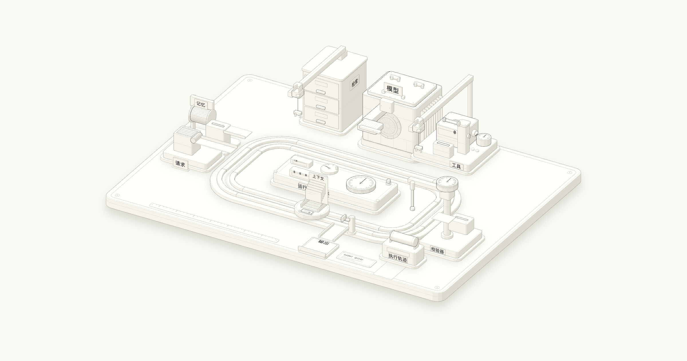
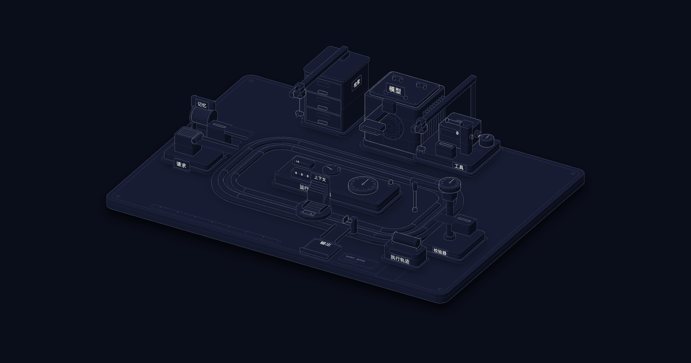

/start-learning
v1.0.0询问学习目标与可用时间，进行分级测验，并写出供其他技能使用的学习计划。
- 你可以说
开始学习
配置课程
- 写入产物
- LEARNING.md
FIG_SKL · 编程 agent 技能
技能是一份简短的指令文件。请求匹配某个技能时，agent 会读取文件并按步骤执行。这 16 个技能用于课程辅导、水平测验，以及图表和手册制作。
npx skills add fancyboi999/ai-engineering-from-scratch-zh安装单个技能时加 --skill <name>。先列出技能时加 --list。支持 Claude、Cursor、Codex、OpenClaw、Hermes，以及所有能读取 SKILL.md 的 agent。
首次学习这套课程时使用。
/start-learning询问学习目标与可用时间，进行分级测验，并写出供其他技能使用的学习计划。
开始学习
配置课程
/find-your-level用简短的自适应测验判断适合的起点，以及可以跳过的课程。
测测我的水平
我该从哪里开始
/course-guide提供主题、问题或报错，它会找出相应课程，并给出下一条运行命令。
哪节课讲 RAG
注意力机制这里我卡住了
每次学习时使用，读取并更新你的计划。
/learn在终端中逐节讲解下一课，提问并记录学习进度。
/learn
教我下一课
/check-understanding对一个阶段进行测验，指出继续之前需要复习的课程。
测验第 3 阶段
检查我的理解
/build-project每次指导一个项目阶段，只给提示。你亲手写代码并运行阶段评分器。
做一个项目
继续我的项目
围绕一个主题逐课学习。
/learn-mcp沿 Model Context Protocol 路径逐课学习客户端、服务器、传输、安全、网关与一致性。
教我 MCP
继续 MCP 路径
/learn-agent-skills沿 Agent Skills 路径逐课学习技能的编写、发现、运行、安全、测试、打包与移植。
教我 agent 技能
继续技能路径
/learn-reverse-engineering沿逆向工程路径逐课学习：读取自己编译的程序，解码、提升表示、记录证据，并证明重建结果等价。
教我逆向工程
继续逆向工程路径
通过课程、实验和限时练习准备考试。
/claude-certification指导四条独立的 Claude 认证备考路线：选择路线、逐课学习、运行实验、参加模拟考试。
准备 Claude 认证
继续我的认证备考
/mcpa-certification指导 Model Context Protocol Associate 考试备考，提供课程、实践实验和带反馈的练习题。
准备 MCPA
MCPA 模拟考试
制作符合本站风格的图表和手册。
/course-style定义明暗主题配色、字体、图表标签和清晰的技术写作规则。本组其他技能会读取它。
使用课程风格
检查这段技术文字是否清楚
/blueprint-figure为课程、README 和手册制作静态 SVG 图表。提供九种图形、配色规则，以及标签字号和重叠检查。
画一张请求路径图
为本课制作 FIG_012
/motion-figure制作动画与交互图表：SVG 动画、滑块组件、带控件和计算结果的图表，以及本页顶部这样的抖色条带。
用动画解释这个概念
展示这个系统如何工作
选择一个请求。agent 始终保留所有技能的名称和描述。请求匹配时，才读取完整 SKILL.md，再按需读取其中列出的参考文件。
已用上下文
/isometric-explainer用交互式等距机器逐步展示流程，由经过测试的状态模型驱动。用控件禁用部件，观察故障如何发生。
用机器解释缓存如何淘汰条目
为本课制作等距交互讲解


制作示例：AI agent 内部机制 →/write-manual围绕一个工具的固定版本编写长篇手册，包含来源、目录、每个示例的离线运行记录、图表与审计。
为这个工具编写手册
开始编写入门手册
许多课程最后会提供技能或 prompt 文件。可以按阶段或标签安装。
409 个技能与 100 个 prompt 位于对应课程的 phases/**/outputs/ 目录。克隆仓库后，将需要的文件复制到 agent 的项目技能目录。
python3 scripts/install_skills.py ./.claude/skills --phase 14
python3 scripts/install_skills.py ./.cursor/skills --tag rag
python3 scripts/install_skills.py .skills --type all --dry-run告诉技能读者需要理解什么，以及图表用于课程、README、手册还是独立页面。有真实数据就提供数据，图表会根据这些数值计算结果。
例如：为技能课程画一张图，展示 agent 如何加载技能。使用真实文件大小。
agent 如何发现和加载技能
阅读课程 查看 GitHub 上的全部技能 ↗